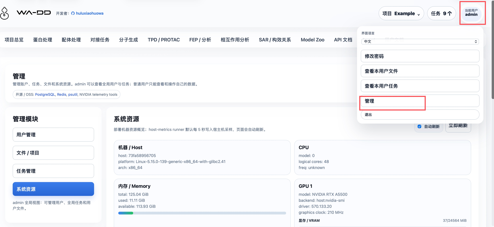
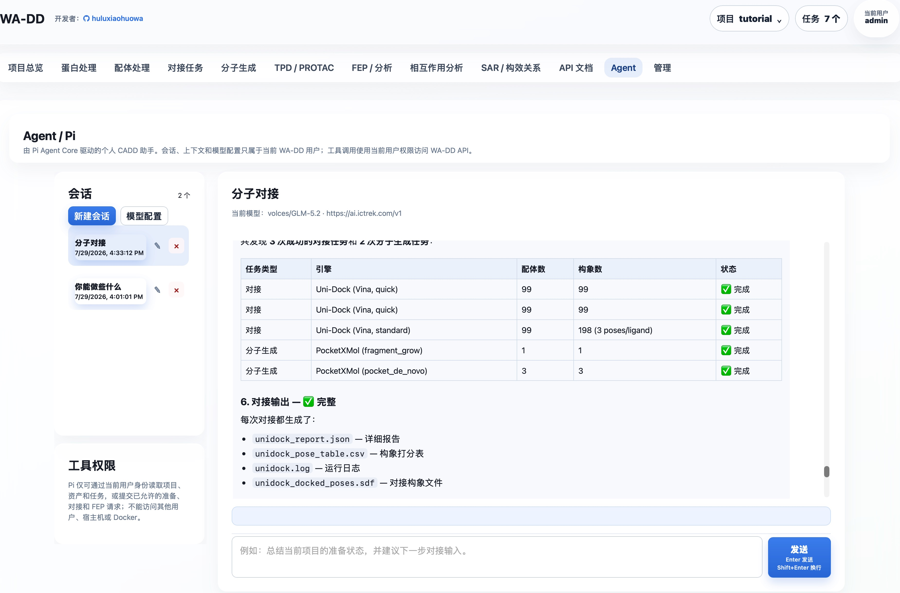

WA-DD

开发者：huluxiaohuowa · 本项目仍处于开发中，如需测试请联系 qhulu@outlook.com（仅接受学术科研机构和大专院校的测试申请，暂不接受公司商业化合作）。
面向药物研发的一体化分子设计工作台

WA-DD 专为计算机辅助药物设计（CADD）研究人员打造，将靶点蛋白处理、配体准备、分子对接、分子生成、FEP/RBFE 自由能生产计算和相互作用分析整合到统一的浏览器界面中。
从 PDB 结构导入到配体库准备，从 Uni-Dock 对接到 PocketXMol 生成、FEP 规划和三维相互作用检查，所有中间结果都保留为可复用资产——WA-DD 让您专注于药物设计本身，而非工具链的拼凑与切换。

核心价值
- 连续工作流：已覆盖蛋白准备、配体准备、对接、分子生成、FEP/RBFE 生产计算和相互作用分析
- 资产化管理：蛋白、口袋、配体、对接构象库、FEP 派生 SDF 和报告都沉淀为可复用、可追踪、可 API 调用的资产
- 灵活部署：支持 x86 NVIDIA 和 Jetson Thor ARM64 平台，兼顾性能与边缘计算
- 开放生态：对接 Uni-Dock、Vina、OpenFE、OpenMM 等主流 CADD 工具
功能状态
功能按用户能否在当前 WebApp 中完成端到端任务划分；“规划中”模块不应视为生产可用能力。
| 状态 | 模块 | 当前可用范围 |
|---|---|---|
| 已可用 | 项目与资产、蛋白处理、配体处理、对接任务、分子生成、相互作用分析 | 可创建并复用资产、提交任务、查看、筛选、导出或下载输出。 |
| 已可用 | FEP / RBFE 生产计算 | 支持 OpenFE + OpenMM（CUDA）进行真实 ΔG/ΔΔG 自由能计算；可选择 dry-run 规划或完整生产模拟；输出 edge 结果表、带 FEP 字段的 SDF 和轨迹文件。 |
| 已可用 | Model Zoo、Agent / Pi、管理、系统资源、用户文档、API 文档 | 可集中下载和更新项目模型；可管理个人 Agent 会话与模型配置；管理员可管理用户和任务；模块指南和 API 契约可直接浏览。 |
| 规划中 | TPD / PROTAC、SAR / 构效关系 | 目前仅保留功能定位与指南入口，尚无可提交的业务工作流。 |
已可用
- 项目与资产：按用户隔离项目、资产、任务和文件；资产支持预览、下载、重命名、删除和复制到其他项目。操作优先使用资产名称、类型和来源，不要求用户记裸 ID。
- 蛋白与配体处理：支持 PDB ID/本地 PDB、SMILES/SDF/MOL/MOL2/PDB 导入，3D 预览、口袋定义、Ketcher 2D 编辑及蛋白/配体准备。配体资产按原始配体、准备后配体、对接构象、分子生成和 FEP 输出分组，可打开 2D/3D、排序、筛选、合并、导出。
- 对接与相互作用分析：使用 Uni-Dock GPU（Vina/Vinardo 评分）提交对接任务；每组任务输出一个合并 SDF pose library 和报告。相互作用分析可从对接、生成或 FEP 输出中多选构象，检查几何接触、导出表格/SDF 或生成新资产。
- 分子生成：PocketXMol 支持口袋 de novo 生成和 fragment growing；结果保存为可复用的
prepared_ligand或prepared_ligand_library。scaffold hopping与linker design需要原子锚点选择器，当前未开放。 - FEP / RBFE 生产计算：基于 OpenFE + OpenMM（CUDA）执行真实相对结合自由能计算。支持 star 拓扑网络、Lomap 原子映射、dry-run 规划预览和完整生产模拟。每个 edge 输出 ΔΔG (kcal/mol)、误差和轨迹文件（DCD），结果汇总为
fep_resultedge 表和带 FEP 字段的fep_outputSDF。支持从对接姿势库或准备好的配体 SDF 直接启动。 - Model Zoo：集中管理项目模型，置顶 PocketXMol 和 DeepTernary，并支持自选 ModelScope / HuggingFace 仓库下载。模型路径与 VAI ModelHub 保持同一套
/data/export/ms|hf/.../current结构。 - Agent / Pi：每位用户拥有独立会话、上下文和加密模型配置；受控工具仅能访问该用户有权限的项目、资产和任务。
- 管理、用户文档与自动化：管理员可审核用户和管理全局任务；系统资源页显示宿主机 CPU、内存、磁盘和 GPU；Web 镜像会把
userguide/*.md转换为页面内用户文档；API 文档基于 FastAPI OpenAPI，支持以project_id、asset_id和job_id串联自动化。


规划中：尚未实现业务工作流
- TPD / PROTAC：拟支持 POI-E3 三元复合物设计、warhead/E3 ligand/linker 设计与降解剂优化。
- SAR / 构效关系：拟支持活性数据表、R-group 分析、MMPA、构效关系可视化和下一轮设计候选推荐。
交互结构
全局顶部只承载应用标题、项目上下文、任务中心、用户和退出。项目切换、新建、删除收进右上角项目菜单；任务进度收进任务中心，按步骤时间线显示，不在顶部铺绿色状态条。
每个业务模块按 CADD 操作流分层：
- 左侧：输入、参数、资产选择和提交动作。
- 右侧：主工作区、3D/2D 预览、编辑器、输出检查和下载入口。
- 需要大画布的功能，例如蛋白 3D 操作和 Ketcher 2D 分子编辑，提供专注编辑模式，可弹出为独立全屏窗口，完成后退出回到工作台。
持久化路径与跨容器文件约定
所有业务容器必须把同一个宿主机目录挂载到容器内 /data：
宿主机：${WA_DD_DATA_HOST_DIR}
容器内：/data
生产环境示例：
WA_DD_DATA_HOST_DIR=/data/ssd/jhu/wa-dd-web/data
web、protein-prep worker、ligand-prep worker 和后续模型 worker 都必须使用相同的容器内路径：
/data/users/<user_id>/projects/<project_id>/assets/<asset_id>/...
/data/model-cache/...
数据库 AssetFile.storage_path 只记录容器内 /data/... 路径，不记录宿主机路径。这样 web 上传、worker 读取、worker 输出、web 下载和跨任务复用都使用同一套路径，不会因为不同容器看到不同目录而混乱。
/modelhub 是共享模型目录，不用于用户项目输入/输出文件。Model Zoo 服务把同一宿主目录挂载为 /data，并维护与 VAI ModelHub 一致的 export/ms|hf/<org>/<repo>/snapshots/... 与 current 稳定入口；web 和模型 worker 通过 /modelhub/export/.../current 读取。
系统资源监控使用同一个 /data 挂载路径传递宿主机指标：
/data/system-metrics/host.json
wa-dd-host-metrics runner 默认每 5 秒写入这个文件。Web 容器不需要 NVIDIA runtime；它只读取 JSON。runner 会在宿主机 namespace 中采集 GPU：Jetson/Thor/Tegra 主机优先使用 tegrastats 或 Jetson sysfs，不走 nvidia-smi；x86 NVIDIA 使用 nvidia-smi；ROCm 使用 rocm-smi。没有可用 GPU 工具时，页面会明确显示 GPU 不可见，而不是伪造占用数据。
默认账户
username: admin
password: admin123456
新用户可以在登录页提交注册申请，必须由管理员审核后才能使用。后续接入 VOS 账户时，可通过受 WA_DD_USER_PROVISION_TOKEN 保护的接口自动创建用户空间。
独立 Docker 部署（当前）
根目录只有 compose.yaml，只定义 amd（x86_64 CUDA 12.8）和 thor（Jetson Thor CUDA 13+）两个 profile。FEP 已作为 profile 内 worker 服务接入。
部署由 deploy.sh 负责：它从 SWR 查询匹配当前平台 tag 规则的最新镜像，并更新既有部署根目录的 images.env。runtime.env 是持久化运行状态的映射，部署脚本只读取和校验它，绝不自动新建或改写它。images.env.example 只描述变量结构；build_image.sh 只构建和推送镜像，不会修改仓库或部署目录中的版本记录。CPU 组件使用单一 Dockerfile；GPU 组件的 AMD CUDA 12.8 与 Thor CUDA 13+ Dockerfile 分开。
cp .env.web.example .env.web
# 编辑 .env.web：设置密码、端口及其他部署配置
./deploy.sh --profile amd --root /absolute/path/to/wa-dd-runtime
Thor 使用 --profile thor。部署根目录持有 images.env 与既有的 runtime.env，后者显式指定数据、数据库、Redis 与 Model Hub 的宿主机路径，因此持久化状态不会写入源码仓库。tc232 的既定运行根是 /data/vos_workspace，必须始终复用它，不能用新目录替代。首次部署前可用 ./deploy.sh --check --profile amd|thor 验证镜像发现和 Compose 渲染。
全量更新与单组件更新（两者都支持）：
# 全量：检测所有组件的新镜像并协调整个 amd 服务组（原有用法，默认 --component all）
./deploy.sh --profile amd --root /data/vos_workspace
# 单组件：只检测 Web 镜像，只替换 Web；不重建 PostgreSQL、Redis 或其他 worker
./deploy.sh --profile amd --root /data/vos_workspace --component web
# 其他可单独替换的组件
./deploy.sh --profile amd --root /data/vos_workspace --component ligand-prep
./deploy.sh --profile thor --root /data/vos_workspace --component molecule-gen
可用组件为 web、model-zoo、host-metrics、protein-prep、ligand-prep、unidock、molecule-gen、deepternary（仅 amd）、pi-agent、fep 和 all。单组件模式只更新该组件对应的 images.env 条目，并使用 Compose 的 --no-deps --force-recreate 替换该服务；全量模式仍检测全部镜像并执行完整服务组更新。
如需发布新镜像，请在明确指定的构建环境运行 ./build_image.sh --profile amd|thor --component web|model-zoo|host-metrics|protein-prep|ligand-prep|unidock|molecule-gen|deepternary|pi-agent|fep|all。标签由组件是否使用 GPU 自动决定并推送到 huluxiaohuowa；model-zoo 是 CPU 组件，使用同一个 Dockerfile.model-zoo，只按 amd/arm 平台区分标签；Pi worker 也是 CPU 组件，随 all 构建；FEP 仍不包含在 all 中。下次 deploy.sh 会重新发现并采用匹配的最新 tag。由于当前 Compose 包含 FEP worker，首次部署前 registry 也必须已有对应平台的 FEP 镜像，否则部署脚本会明确失败。Pi 复用 WA_DD_DATA_HOST_DIR 下的 pi/ 目录；首次启动会自动生成并持久化配置加密主密钥，详见 Agent / Pi。
快速启动
首次部署：
cp .env.web.example .env.web
# 编辑 .env.web；部署根目录必须是绝对路径
./deploy.sh --profile amd --root /absolute/path/to/wa-dd-runtime
Jetson Thor 部署：
./deploy.sh --profile thor --root /absolute/path/to/wa-dd-runtime
服务启动后访问 http://localhost:8800，使用默认账户登录：
用户名: admin
密码: admin123456
支持的组件
当前 profile 会启动以下核心组件：
| 组件 | 说明 | 依赖 |
|---|---|---|
| Web UI/API | 主界面与 REST API | CPU |
| Model Zoo | 模型下载、更新和 ModelHub 兼容路径管理 | CPU |
| Host metrics | 系统资源监控 | CPU |
| Protein prep | 蛋白准备（加氢、去溶剂化等） | CPU |
| Ligand prep | 配体准备（含 RDKit、OpenBabel、Meeko） | CPU |
| Uni-Dock | GPU 对接引擎（Vina/Vinardo） | NVIDIA GPU |
| Molecule gen | PocketXMol 分子生成 | NVIDIA GPU |
| FEP | OpenFE + OpenMM 自由能计算 | NVIDIA GPU（AMD 或 Thor） |
模型缓存
WA-DD 模型文件和 Model Hub 使用同一套持久化目录结构。当前主要模型包括：
- PocketXMol（分子生成）：
/modelhub/export/ms/huluxiaohuowa/pocketxmol/current - DeepTernary（TPD / PROTAC）：
/modelhub/export/ms/huluxiaohuowa/deepternary/current
宿主机路径是 ${MODEL_HUB_SHARED_MODELS_PATH}/export/ms|hf/<org>/<repo>/current。如果按本仓库的独立部署 compose 启动，${MODEL_HUB_SHARED_MODELS_PATH} 会映射到 web/worker 容器的 /modelhub，并映射到 wa-dd-model-zoo 容器的 /data。
推荐通过网页 Model Zoo 下载和更新 PocketXMol、DeepTernary 或自选模型；分子生成和 TPD 页面内的小卡片仍可查看对应模型是否就绪。命令行等价方式：
pip install modelscope
mkdir -p "${MODEL_HUB_SHARED_MODELS_PATH}/export/ms/huluxiaohuowa/pocketxmol/snapshots/manual"
modelscope download \
--model huluxiaohuowa/pocketxmol \
--local_dir "${MODEL_HUB_SHARED_MODELS_PATH}/export/ms/huluxiaohuowa/pocketxmol/snapshots/manual"
ln -sfn snapshots/manual "${MODEL_HUB_SHARED_MODELS_PATH}/export/ms/huluxiaohuowa/pocketxmol/current"
预期包含：
data/trained_models/pxm/checkpoints/pocketxmol.ckptdata/trained_models/pxm/train_config/train.yml
模型更新不会在本地 current 已满足必需文件时盲目删除重下；Model Zoo 会把新下载内容放入新的 snapshot，校验必需文件后再切换 current。WA-DD 和 Model Hub 使用同一目录规范，因此任一系统下载的 huluxiaohuowa/pocketxmol 或 huluxiaohuowa/deepternary 都能被另一方读取和更新。
Uni-Dock 对接引擎为传统分子对接程序，不依赖神经网络模型文件。
API 自动化
标准 API 契约由 FastAPI 自动生成：
/openapi.json/docs/redoc
网页内的 API 文档页面也会读取 /openapi.json。自动化工作流按 project_id、asset_id、job_id 串联：
login
-> project_id
-> protein asset_id
-> pocket asset_id
-> ligand asset_id
-> prepared_ligand asset_id
-> docking job
-> job_id
-> output_asset_ids
-> file download
使用指南
模块级使用指南在 userguide：
- Example 1TA2 完整范例
- 项目与资产
- 蛋白处理
- 1A2C 蛋白准备示例
- 配体处理
- 配体准备功能框架
- 对接任务
- 分子生成
- Model Zoo
- FEP 与分析
- 相互作用分析
- TPD / PROTAC
- SAR / 构效关系
- 管理
- Agent / Pi
- API 自动化
VOS 打包
VOS 包模板位于 ictrek.app/，当前独立 WebApp 开发不依赖 VOS：
cd ictrek.app
./scripts/package.sh
来源与许可
WA-DD 当前以资产管理、蛋白/配体准备、Uni-Dock 对接、PocketXMol 分子生成、FEP/RBFE 生产计算和相互作用分析为核心。
项目源代码采用 Business Source License 1.1： - 非商业用途：可用于学术研究和教育目的，但不得分发或商业使用 - 商业用途：需联系 Licensor 获取商业授权 - 变更条款：2029-07-31 后自动变更为 Apache License 2.0
第三方组件（如 deepternary/DockQ、mmrotate 等）仍分别适用其自身许可证。